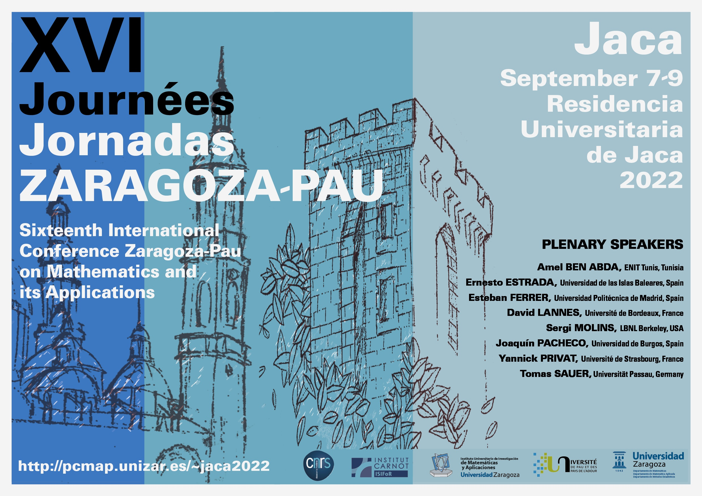

| Boletín electrónico de la SEMA – Número 30, junio 2022 | |
| ISSN 2659-4129 | |
| © | Sociedad Española de Matemática Aplicada – SEMA |
| © | De los autores |
| |
|
| https://www.sema.org.es/ |
Diseño de la portada: FOG.
Imagen: Arcos del Patio de Santa Isabel del Palacio de la Aljafería, Zaragoza.
Editorial Palabras del presidente Bibliografía
Estimados socios, este es el número treinta de nuestro Boletín. Nuestro firme deseo es que muchas otras ediciones del mismo sigan apareciendo en el futuro.
El presente número contiene muchas buenas noticias. ¡Ojalá pudiéramos editar contenidos como estos en cada Boletín! Varios miembros de la SEMA han recibido en fechas recientes diversas distinciones de gran prestigio nacional e internacional. Reciban todos ellos nuestra más sincera felicitación por tan alto logro que enorgullece a toda la comunidad matemática española y, muy especialmente, a los miembros de la SEMA.
El pasado 13 de mayo se celebró un acto en la Universidad de Cádiz de conmemoración de los 250 años de los Estudios de Ingeniería Naval y la Escuela de Navales en España. Los editores de este Boletín, invitados a asistir a dicho acto por la directora de la Escuela de Ingeniería Naval y Oceánica, la profesora María Victoria Redondo Neble, pudimos constatar en las diferentes conferencias que se impartieron, el enorme peso de los contenidos de Matemáticas de estos estudios ya desde sus primeras etapas iniciales. Como consecuencia de ello, sugerimos a María Victoria que nos escribiera una reseña del acto que tuvo a bien en aceptar (sección 1).
En la sección dedicada a las noticias podéis encontrar con detalle las distintas concesiones de galardones y distinciones que mencionábamos más arriba. También se ha incluido una crónica, firmada por el profesor Tomás Caraballo Garrido, de la jornada científica celebrada en Sevilla en homenaje a la profesora María José Garrido Atienza, tristemente fallecida el 24 de enero de 2021. Finalmente, se describen dos resúmenes de tesis, recientemente defendidas, por la Universidad de Málaga y la Universidad de Sevilla, respectivamente.
En la siguiente sección se anuncian la convocatoria de las becas Leonardo de la Fundación BBVA, así como la celebración de varios eventos científicos de interés para miembros de la SEMA. En particular, el Curso y encuentro de Análisis Numérico «Zaragoza Numérica» tendrá lugar la semana anterior a la celebración del XXVII Congreso de Ecuaciones Diferenciales y Aplicaciones/XVII Congreso de Matemática Aplicada (CEDYA/CMA) en Zaragoza.
Como es habitual, terminamos nuestra presentación con los contenidos del SEMA Journal, en esta ocasión, de los números 1 y 2 del volumen 79.
Confiamos en que estos contenidos sean del agrado de toda la comunidad SEMA, y esperamos coincidir con la gran mayoría de sus miembros en Zaragoza el mes que viene.
Saludos cordiales,
Francisco Ortegón Gallego
José Rafael Rodríguez Galván
San Fernando, 20 de junio de 2022


Este boletín verá la luz unos días antes de la celebración del XXVII Congreso de Ecuaciones Diferenciales y Aplicaciones/XVII Congreso de Matemática Aplicada (CEDYA/CMA) en Zaragoza. Ha sido un último año de trabajo muy intenso para los comités ejecutivo y científico liderados por los profesores Luis Rández y Juan Ignacio Montijano. Quiero aprovechar estar palabras para agradecerles a ellos, y a los miembros de los comités que presiden, su trabajo, dedicación y esfuerzo para que el próximo CEDYA sea todo un éxito.
Quiero agradecer como presidente y socio de la SEMA el trabajo y dedicación de nuestro secretario, Fernando de Terán Vergara, que cesa en su cargo en los próximos días. Fernando, al que no conocía personalmente antes de acceder a la presidencia de la SEMA, es una persona entusiasta con todo lo que hace, muy implicado con nuestra Sociedad y un trabajador incombustible. Él ha desempeñado un papel fundamental en las labores organizativas de la SEMA, durante estos últimos años. Muchas gracias por tus consejos y tu buen hacer en el tiempo que hemos coincidido en el Comité Ejecutivo de nuestra Sociedad y espero seguir contando contigo como un miembro muy activo de la misma.
Resulta especialmente gratificante leer este Boletín y ver que la Matemática Aplicada en España goza de muy buena salud. Los galardones recibidos por nuestros colegas Jesús M. Sanz Serna, Premio Jaume I en Investigación Básica 2022, Luis Vega, Premio Nacional de Investigación «Julio Rey Pastor» 2021, en el área de matemáticas y tecnologías de la información, son un claro ejemplo de ello. Además, nuestro colega José Antonio Carillo ha sido seleccionado como conferenciante invitado en el próximo ICIAM 2023. A lo anterior hay que unir los galardonados con el Premio SEMA «Antonio Valle» al joven investigador 2022, David Gómez Castro y Marc Jornet Sanz, y el galardón recibido por Martina Conte, premio Reinhart Heinrich a la mejor tesis doctoral en 2021, concedido por la Sociedad Europea de Biología Matemática y Teórica (ESMTB). Mi más sincera enhorabuena a todos ellos. Estos galardones son un reconocimiento a carreras particulares consagradas o incipientes, pero todos ellos ponen de manifiesto el enorme esfuerzo que hace el colectivo de investigadores e investigadoras en Matemática Aplicada por alcanzar la excelencia, a pesar de las dificultades con las que nos encontramos en nuestro día a día.
Finalmente, os animo a participar en la edición de los próximos Boletines de nuestra Sociedad, enviando a los redactores del mismo, información sobre eventos que se han organizado o se van a organizar en vuestras instituciones, tesis doctorales defendidas, galardones recibidos y, en general, todo aquello que consideréis relevante para nuestra Sociedad.
Un cordial saludo y feliz verano,
| Manuel Jesús Castro Díaz |
| Presidente de la SEMA |
| Málaga, 18 de junio de 2022 |
María Victoria Redondo Neble
Directora de la Escuela de Ingeniería Naval y Oceánica
Departamento de Matemáticas de la Universidad de Cádiz

_________________________________
Quiero comenzar agradeciendo a los profesores Dres. D. Francisco Ortegón Gallego y D. José Rafael Rodríguez Galván, el haberme brindado la oportunidad de escribir esta reseña sobre el 250.º aniversario de los estudios reglados superiores de ingeniería naval (1772), efeméride que conmemoramos el pasado 13 de mayo de 2022 en el Salón de Actos de la Facultad de Ciencias, en un acto organizado por la Escuela de Ingeniería Naval y Oceánica de la Universidad de Cádiz, con la colaboración del Colegio Oficial de Ingenieros Navales y Oceánicos de España, la Armada y Navantia.
También me gustaría expresar mi más sincero agradecimiento a las personas excepcionales que en este camino he tenido el privilegio de conocer, que nos han ayudado en la organización y de las que he aprendido por sus extensos conocimientos muchas de las cuestiones a las que aquí me voy a referir, el doctor ingeniero naval D. José María Sánchez Carrión, el doctor ingeniero naval D. Rodrigo Pérez Fernández y el capitán de navío D. Agustín E. González Morales, con cuya colaboración, apoyo, consejo y enseñanzas tuve el honor de contar desde el primer momento.
La Escuela de Navales de Cádiz, actualmente bajo la denominación de Escuela de Ingeniería Naval y Oceánica, es un magnífico centro en el que se imparten unas enseñanzas maravillosas que nacieron en el seno de la Armada y que están muy ligadas a la Bahía de Cádiz, un entorno privilegiado por la naturaleza y lleno de recursos, y a la historia que la precede.
No en balde sus estudios puede decirse que son el fruto de su enclave geográfico y de los distintos acontecimientos que tuvieron lugar desde los comienzos, partiendo de la tecnología naval y la destreza de los constructores y carpinteros de ribera de finales de siglo XV, que convirtió a España en la primera potencia naval del mundo, contribuyendo al descubrimiento de nuevos continentes y ampliando los límites del conocimiento, pero que tomó un rumbo hacia la necesidad de mejorar técnicamente la construcción naval en la primera mitad del siglo XVIII, bajo el reinado de Felipe V, para garantizar el tráfico marítimo y mantener esta hegemonía en ultramar.
Aunque 1772 es el año clave motivo de esta efeméride, no se pueden entender los estudios de ingeniería naval sin distintos acontecimientos cruciales que tuvieron lugar entonces.

Al llegar al trono español Felipe V a principios del siglo XVIII, las fuerzas navales mostraban una profunda decadencia y el rey, junto con su secretario de Estado, José Patiño Rosales, vieron la necesidad de reforzar la Armada para garantizar la seguridad de las costas y la conexión con ultramar, por lo que Patiño ordenó la creación del Cuerpo General, con funciones militares en la mar y competencias técnicas, y el Cuerpo de Ministerio, con carácter económico y de gestión. Asimismo, en el año 1717, el entonces Intendente General de la Marina Patiño crea, por un lado, la Academia de Guardias Marinas en Cádiz, promoviendo una enseñanza para formar a los oficiales tanto práctica como teórica, y en conocimientos que incluían la construcción, las matemáticas y el armamento, con el objetivo de conseguir que se convirtieran en técnicos, constructores, navegantes, y, por otro, ordena el comienzo de la construcción del primer astillero moderno de España, El Real Arsenal de la Carraca, en San Fernando, para reconstruir y aumentar la capacidad de la flota española, al que seguirían el de Cartagena y el de Ferrol.
Haciendo un inciso, y por citar algunas construcciones relevantes de la Bahía de Cádiz, el Real Arsenal de la Carraca botaría en 1752 el África, el primer navío de línea construido con un nuevo sistema de diseño y construcción llamado de Jorge Juan o a la inglesa, posteriormente las corbetas Descubierta y Atrevida que fueron utilizadas por Malaspina en su expedición científica, en 1846 construiría el Lepanto, primer vapor a ruedas construido en un arsenal del estado, el primer crucero metálico realizado en España, El Infanta Isabel, y en 1888 botaría el submarino Peral, el primero con propulsión eléctrica.
Este astillero, junto con los astilleros de Cádiz, que en 1895 botarían el crucero acorazado Emperador Carlos V, que fuera en su momento el barco más grande construido en España, y más tarde el Buque Escuela Juan Sebastián Elcano, velero emblemático y simbólico de nuestra tierra botado en 1927, y la nueva factoría de Matagorda en Puerto Real, que en 1891 botaba el vapor Joaquín del Piélago, su construcción número1, en la que empleó íntegramente materiales de producción nacional, construiría el trasatlántico Magallanes (figura 1), botado en 1927, y en 1958 ponía la quilla de El Talavera, el mayor petrolero construido hasta la fecha en un astillero español, configurarían a la Bahía de Cádiz como uno de los núcleos industriales más potentes de nuestro país a lo largo del siglo XX.
Volviendo a la historia, hay ciertos acontecimientos que se consideran relevantes a la hora de tomar decisiones y desembocar en los estudios actuales de ingeniería naval.
Además de la creación en 1717 de la Academia de Guardias Marinas, ubicada inicialmente en el Castillo de la Villa de Cádiz, donde permaneció hasta el año 1769 en que fue trasladada a la Isla de León (la actual San Fernando) en las ordenanzas de 1748, y siendo consciente la Armada de la necesidad de mejorar el nivel de conocimientos de sus oficiales, se recoge que aquellos alumnos que demostrasen su capacidad podrían aplicarse a las ciencias matemáticas más difíciles, siendo éste el germen de lo que serían conocidos como estudios mayores.
Por otro lado, gracias al impulso del Marqués de la Ensenada, máxima autoridad de la Armada, se produce entonces la primera revolución en la construcción naval española, bajo el reinado de Fernando VI. En 1751 es nombrado capitán de la Compañía de Guardias Marinas Jorge Juan Santacilia (figura 2), que después de ejercer una labor de espionaje industrial en Gran Bretaña, introdujo los últimos avances tecnológicos, incrementó las enseñanzas de la construcción naval y promovió la creación del Real Observatorio de la Armada de Cádiz, el observatorio más antiguo de España, al considerarlo indispensable para la formación y que coincidió en el Castillo de la Villa con la Academia de Guardias Marinas hasta que en 1798 fue trasladado a la Isla de León.
Sin embargo, el desarrollo del conocimiento científico unido a las nuevas misiones de la flota española, la protección y el mantenimiento del monopolio del comercio con América y Filipinas, la defensa de los territorios de ultramar, el incremento de los buques y la importancia táctica de la velocidad de estos, dejan de nuevo patente las carencias técnicas y la necesidad de poder contar con un cuerpo científicamente capacitado para dirigir las obras de construcción naval. Así, ya bajo el reinado de Carlos III y bajo el clima de alianzas de estado, se incrementó la colaboración con Francia en política naval y Francia cedió a unos de sus constructores, Francisco Gautier, iniciándose la segunda revolución de la construcción naval española.
Francisco Gautier, apasionado de la docencia y que ya explicaba Matemáticas, Geometría, Hidrodinámica y Dibujo en 1766 en un local habilitado en Guarnizo, impulsa la creación del Cuerpo de Ingenieros de Marina en 1770, naciendo por tanto en el seno de la Armada la figura del futuro Ingeniero Naval y Oceánico, en una ordenanza que contemplaba también la creación de una Escuela de Cadetes que no llegó a materializarse. Gautier, ya en la nueva ordenanza de 1772, suprimió la Escuela de Cadetes y en su lugar creó una Academia para instruir a los Ingenieros de Marina, lo que se considera el inicio de los estudios superiores de ingeniería naval. Sin embargo, la Academia no disponía de instalaciones propias como así ocurría con la Academia de Guardias Marinas o los estudios del Real Observatorio de Cádiz, y los ingresados en el Cuerpo recibieron clases en improvisados locales habilitados en los arsenales de Cádiz, Ferrol y Cartagena.
Por su parte, Francisco Gautier y, posteriormente, Romero Landa, que fuera alumno suyo, pusieron todo su empeño en la preparación de la Academia de Ingenieros de la Marina, sin embargo, ésta no llegó a institucionalizarse, probablemente por motivos económicos y por la lucha por las competencias entre el Cuerpo General, el Ministerio y ahora el nuevo Cuerpo de Ingenieros.
Con la rápida decadencia de la Marina años después, el Cuerpo de Ingenieros se quedaría sin escuela práctica, aunque conservaría la formación científica. Todo ello llevará a la supresión del Cuerpo por Real Decreto de 1827, siendo sustituido por el de Constructores, cuyo reglamento se enfocó a nivel puramente práctico, desechando el aspecto científico anterior. Las consecuencias serán funestas entonces para la construcción naval española y sus efectos se hicieron notar.
En 1834 se hacen los primeros intentos de reorganización del antiguo Cuerpo de Ingenieros de la Armada, que no llegarán a cuajar hasta 1848 por diversas dificultades, entre ellas la falta de hombres capacitados para constituir el núcleo del nuevo Cuerpo. En el Real Decreto de dicho año, se dispone la reorganización del Cuerpo de Ingenieros y el establecimiento de su Escuela Especial, que en 1849 ya existiría ocupando los pabellones del Colegio de Guardias Marinas en el Arsenal de La Carraca, y donde se mantuvo activa hasta el año 1860 en que se trasladó al Arsenal de Ferrol.
Sin embargo, esta Academia de Ingenieros de Cádiz parece que no llegó a consolidarse por la falta de profesores, debiendo completar su formación en el extranjero y egresando finalmente a unos pocos ingenieros. Algunos alumnos del Cuerpo acabaron formándose en el Real Observatorio en Cádiz.
Por su parte, el Cuerpo de Constructores se suprimirá, finalmente, por Real Decreto de 1851.
En paralelo, en 1773 se habían producido los primeros intentos de articular unos estudios de ampliación impulsados por las necesidades científicas de la Armada, que exigían que los oficiales del Cuerpo de Guardias Marinas cursaran estudios para sustentar el programa hidrográfico y que requerían una formación superior en Matemáticas, Física y Geometría para entender los avances de la Astronomía y la Navegación. Por ello, José de Mazarredo (figura 3), que había sido nombrado Comandante de las tres Compañías de Guardias Marinas en 1786, creó en 1787 el Curso de Matemáticas Sublimes, ordenando que en las tres Academias se enseñara la Geometría sublime, el Cálculo y su aplicación a la Astronomía, la Mecánica y la Construcción Naval.
El Observatorio se convertiría en el lugar por donde pasaran la mayor parte de los científicos de la marina ilustrada y donde acometieron proyectos tan importantes como el Atlas Marítimo de España o el primer almanaque náutico, aunque no fue hasta 1856 cuando quedó establecido en el Observatorio de San Fernando el Curso de Estudios superiores de Matemáticas puras, mecánica, física y astronomía, con alumnos destacados como Isaac Peral.
Después de ciertas vicisitudes y tras el desastre de 1898, siendo la construcción para fines comerciales cada vez más demandada, se producen a principios del siglo XX algunos intentos de implantar una especialidad de ingeniería naval con carácter civil, uno de ellos por parte de la liga marítima española de Cádiz, siendo estos infructuosos hasta el año 1917, cuando aparece la primera promoción de Ingenieros y Maquinistas de la Armada con un alumno civil, pero no es hasta 1933 cuando se decide crear la especialidad en Madrid, dependiendo ya del Ministerio de Instrucción Pública (en la figura 6 se muestra la implantación de los estudios superiores de Ingeniería Naval). Coincidiendo con el año de la creación del Cuerpo de Ingenieros Navales Civiles al Servicio del Estado en 1962, comienza la andadura de nuestra Escuela de Peritos Navales en el mes de octubre de ese año.
La enseñanza Técnica de Grado Medio en su especialidad de Perito Naval se implantó en Cádiz por orden ministerial en enero de 1962, siendo por tanto la primera en España en impartir dicha titulación, y ya en 1964 se implantó la titulación de Ingeniero Técnico Naval. Inicialmente dependía de la Universidad de Sevilla, pasando a la Universidad de Cádiz cuando ésta fue creada en el año 1979, siendo uno de sus pilares y un magnífico precedente en su nacimiento.
Se impartió desde sus comienzos en las instalaciones de la entonces Escuela Técnica de Peritos Industriales en Cádiz y en el Curso Académico 1992/93, la ya Escuela Universitaria de Ingeniería Técnica Naval pasó a ubicarse en el término municipal de Puerto Real, en el Centro Andaluz Superior de Estudios Marinos (CASEM), único centro integrado de España que alberga enseñanzas que tienen como eje común el mar y la industria marítima y marina, y donde tienen también su sede la Escuela de Ingenierías Marina, Náutica y Radioelectrónica y la Facultad de Ciencias del Mar y Ambientales.
En el curso 2010/11 se implanta el actual grado en Arquitectura Naval e Ingeniería Marítima y la Escuela pasa a denominarse Escuela de Ingeniería Naval y Oceánica, implantándose en 2016/17 el máster en Ingeniería Naval y Oceánica.
Por tanto, mientras los Astilleros de la Bahía de Cádiz cumplen años con gran vitalidad en la actualidad, con la construcción de las corbetas, los nuevos buques de acción marítima, el tradicional mercado de petroleros y la reparación de Grandes Cruceros, nuestra escuela está a punto de cumplir 60 años de historia en este marco excepcional, con importantes empresas que colaboran con nuestro centro en su formación y con un alto porcentaje de profesionales procedentes del sector naval que compaginan su actividad con la docencia en nuestro centro. La celebración de tan importante efeméride constituyó el pasado 13 de mayo un día muy especial, porque pudimos conmemorar de donde venimos, nos unen lazos históricos con la Armada, y analizar hacia donde vamos con la colaboración de la Industria y sus profesionales.
El evento fue presidido por D. Francisco Piniella Corbacho, rector de la Universidad de Cádiz, y estuvimos acompañados en la mesa presidencial por D.ª Elena Amaya León, alcaldesa de Puerto Real, D. Manuel Antonio Martínez Ruiz, vicealmirante del Cuerpo de Ingenieros de la Armada y director de Ingeniería y Construcciones Navales, D. Cristóbal Sánchez Morales, secretario general de Industria y Minas de la Junta de Andalucía, D.ª Pilar Tejo Mora-Granados, decana del Colegio Oficial de Ingenieros Navales y Oceánicos de España, y D. José Antonio Rodríguez Poch, director de Negocio de Corbetas y Buques de Acción Marítima de Navantia.
El programa del acto se estructuró en dos sesiones de ponencias, la primera estuvo dedicada a la Historia de los Estudios de Ingeniería Naval y la segunda a la Ingeniería Naval en la actualidad. Abrió la primera sesión el capitán de navío del Cuerpo de Ingenieros de la Armada, ingeniero en la especialidad de Armas Navales y escritor, D. Agustín E. González Morales, que impartió la conferencia titulada «Finales del siglo XVIII: comienza la enseñanza de la Ingeniería Naval en España con Gautier y Romero Landa». El doctor ingeniero naval, profesor en la ETSIN (UPM) y Global PFD Director (Marine) en Siemens Digital Industries Software, D. Rodrigo Pérez Fernández, trató de «Las vicisitudes de la Ingeniería Naval y sus centros de formación en el periodo 1808-1948». Y cerrando la primera sesión, el doctor ingeniero naval y catedrático de Construcciones Navales de la UCA, D. Rafael González Linares, impartió la ponencia titulada «Un Quinquenio Prodigioso en la Industria Naval de la Bahía de Cádiz».
La segunda sesión de ponencias contó con las conferencias «Un proyecto retador para los Astilleros de la Bahía de Cádiz», impartida por el ingeniero naval y director del Programa de Corbetas AVT2200 para Arabia Saudí en Navantia, D. Vicente Martínez Caridad, «Navantia SEANERGIES. Origen y Capacidades», a cargo del ingeniero naval y responsable del área de Contract Management dentro de la División de Navantia Seanergies, D. Pablo López Díez, e «Ingeniería Naval, retos y desafíos en el siglo XXI», en manos del ingeniero naval promotor-director de Sea Master Consulting Engineering y decano territorial del Colegio Oficial de Ingenieros Navales y Oceánicos en Andalucía, D. Luis Labella Arnanz.
Finalmente, la clausura también contó con la intervención de D. Antonio Crucelaegui Corvinos, director de la Escuela Técnica Superior de Ingenieros Navales de la Universidad Politécnica de Madrid, y D. Juan José Hernández Ortega, director de la Escuela Técnica Superior de Ingeniería Naval y Oceánica de la Universidad de Cartagena.
Además, estuvieron presentes numerosas autoridades civiles y militares procedentes de la Universidad, de la Armada y de la Industria Naval, y de profesorado, estudiantes actuales y egresados de nuestro centro y de nuestra universidad.
Y ahora debemos continuar el camino, con una formación actualizada que satisfaga la demanda actual y futura del sector, sin olvidar la investigación y el desarrollo científico, fundamentales para poder avanzar.
En 2015 la Organización de las Naciones Unidas marcó una meta, con la agenda 2030 y los Objetivos de Desarrollo Sostenible, que debe dirigir nuestro camino, y como parte de la Universidad, que tiene como compromiso el servicio público de la enseñanza superior y la formación integral de sus estudiantes, debemos tener como uno de nuestros pilares fundamentales el compromiso con nuestro entorno y la proyección del conocimiento para el bien común, contribuyendo al desarrollo económico, social y ambiental de nuestro territorio y siendo parte activa en este plan de paz y prosperidad para las personas y el planeta.
Desde la ingeniería, estamos en una nueva revolución industrial, la Industria 5.0, la revolución industrial de las personas, que pretende tratar a la tecnología desde un punto de vista más responsable y comprometido, generando un impacto positivo en la sociedad. Sus ejes son la sostenibilidad, las personas y la capacidad de adaptarnos y tomar medidas de recuperación basadas en prioridades ecológicas, digitales y sociales.
El sector naval, estratégico para la generación de empleo por su contribución directa a la economía, al ser un pilar fundamental para el desarrollo de otras actividades, desempeña un papel crucial en la reducción de contaminantes, del impacto ambiental, el consumo responsable, el uso de materiales sostenibles y la optimización de la hidrodinámica entre otras cuestiones, factores todos ellos que contribuyen a la consecución de los objetivos.
La Ingeniería Naval y las Matemáticas tienen mucho que decir en la búsqueda de este mundo mejor.
Agradezco enormemente al Dr. D. Rodrigo Pérez Fernández su ayuda en esta publicación, habiendo revisado la misma. También les agradezco a mis compañeros del equipo de dirección, los profesores doctores D. Andrés Yáñez Escolano y D. Francisco Damián Ortega Molina, por la elaboración de los fondos y algunos carteles que sirvieron como imagen del evento y en la exposición que le acompañó, algunos aquí incluidos, y a Dña. Marina Ramajo Segovia, directora del Museo El Dique de Navantia, el haberme proporcionado información relevante, parte de la cual aparece en esta reseña.
[1] Sánchez Carrión, J.M. (2009), La división de la Compañía de Guardias Marinas de Cádiz y la creación de las Subalternas (Cartagena y Ferrol) en 1776. Revista de Historia Naval, 104, 49-75.
[2] Sánchez Carrión, J.M. (2009), Los ingenieros de marina: motores de la renovación y tecnificación de la construcción naval española (1770-1827). Su organización, academia y realizaciones. Tesis Doctoral. ETSIN (UPM).
[3] Pérez Fernández, R. (2020), Las personas que desarrollaron la ingeniería naval en España. Desde Gaztañeta hasta Rechea Hernández. 59º Congreso de Ingeniería Naval e Industria Marítima. Organizado por la Asociación de Ingenieros Navales de España. 14 y 15 de diciembre 2020. ISBN 978-84-939303-8-7.
[4] Pérez Fernández, R. y Pérez-Martinez, J. (2021), El desarrollo de la ingeniería naval en España: 250 años de historia. Revista de Historia Naval. Año XXXIX. Número 154. pp. 107-118. ISSN 0212-467X (impresa) e ISSN 2530-0873 (online).
[5] González Morales, A.E. y González García, A.J. (2021), Cuerpo de ingenieros de la Armada: herederos de la tradición, impulsores del progreso. Ministerio de Defensa. Secretaría General Técnica. ISBN 978-84-9091-602-5.
_____________________________________ ◇◇◇_____________________
El Comité encargado de otorgar el Premio SeMA «Antonio Valle» al Joven Investigador 2022 ha fallado que los ganadores del premio de esta convocatoria son David Gómez Castro y Marc Jornet Sanz. El Comité desea poner en valor el resto de candidaturas presentadas debido a la alta calidad de los trabajos de los aspirantes, animándolos a presentar de nuevo su candidatura en próximas ediciones.
David Gómez obtuvo el grado en Matemáticas por la Universidad Complutense de Madrid en 2013 y el título de máster en Matemáticas Avanzadas por esta misma universidad en 2014. En el año 2017 obtuvo su título de doctor en Matemáticas en el Programa de Doctorado en Ingeniería Matemática, Estadística e Investigación de la Universidad Complutense de Madrid y la Universidad Politécnica de Madrid, con la tesis titulada «Homogenization and Shape Differentiation of Quasilinear Elliptic Equations», dirigida por Jesús Ildefonso Díaz. Desde noviembre de 2018 David Gómez es Profesor Ayudante Doctor en el Departamento de Análisis Matemático y Matemática Aplicada de la Universidad Complutense de Madrid. David Gómez tiene una notable experiencia postdoctoral que comenzó con su colaboración con Juan Luis Vázquez en problemas de difusión fraccionaria. Desde octubre de 2020 está de permiso ocupando un puesto de Investigador Postdoctoral Asociado en el Instituto Matemático de la Universidad de Oxford, apoyado por una beca ERC de José Antonio Carrillo. David Gómez fue galardonado en 2018 con uno de los premios Vicent Caselles que anualmente concede la Real Sociedad Matemática Española en colaboración con la Fundación BBVA. David Gómez ha publicado hasta la fecha un libro y más de 30 artículos científicos en revistas del máximo prestigio, tanto en la categoría de matemática aplicada como en la de matemática general, tales como J. de Math. Pures et Appliquées, J. of Functional Analysis, Annales de l’Institut Henri Poincaré C, Calc. Var. and PDEs, Adv. In Nonlinear Analysis, Discrete and Continuous Dynamical Systems, Fractional Calculus and Applied Analysis, Nonlinear Analysis, Journal of Mathematical Analysis and Applications. El trabajo de David Gómez gira alrededor de las ecuaciones en derivadas parciales, desde los estudios de su tesis en ecuaciones de reacción-difusión semilineales en dominios acotados, especialmente enfocados a problemas de homogeneización, al comportamiento de soluciones bajo deformaciones del dominio y ecuaciones singulares de Schrödinger, hasta los estudios actuales sobre problemas de agregación-difusión en colaboración con J. A. Carrillo, pasando por problemas de difusión fraccionaria, modelos de baterías de ion litio, mecánica estadística y modelos tumorales. Es de destacar la diversidad de técnicas empleadas en sus trabajos. La combinación de contribuciones analíticas y de modelización matemática de alto nivel indica la amplitud de intereses y relevancia científica del galardonado.
Marc Jornet obtuvo el grado en Matemáticas por la Universitat de València en 2015. Obtuvo los títulos de Máster en Matemática Avanzada por la Universitat de Barcelona en 2016 y de Máster en Matemática Avanzada e Ingeniería Matemática por la Universitat Politècnica de Catalunya en 2018. Obtuvo en 2020 su título de doctor en Matemáticas en el Programa de Doctorado en Matemáticas de la Universitat Politècnica de València y la Universitat de València, con la tesis titulada «Mean Square Solutions of Random Linear Models and Computation of their Probability Density Function», dirigida por Juan Carlos Cortés López y Rafael Jacinto Villanueva Micó.
Marc Jornet obtuvo un contrato postdoctoral en la Universitat Jaume I de Castellón a principios de 2021 y desde septiembre de 2021 es Profesor Ayudante Doctor en el Departamento de Matemáticas de la Universitat de València. Marc Jornet ha publicado varias contribuciones de carácter pedagógico y más de 40 artículos científicos en revistas de gran prestigio en la categoría de matemática aplicada y matemática interdisciplinar, tales como Advances in Difference Equations, Applied Mathematics and Computation, Chaos Solitons & Fractals, Communications in Nonlinear Science and Numerical Simulation, Computational & Applied Mathematics, Discrete and Continuous Dynamical Systems-Series S, Mathematical Methods in the Applied Sciences, Nonlinear Analysis-Theory, Methods & Applications. El trabajo de Marc Jornet gira alrededor del análisis, modelización matemática y simulación mediante ecuaciones diferenciales estocásticas, con intereses más concretos en el cálculo aleatorio en espacios de Lebesgue, la resolución de ecuaciones diferenciales aleatorias ordinarias, fraccionarias y parciales, con y sin retardo; la cuantificación de la incertidumbre del proceso de solución y estimación inversa de parámetros. Pese a su juventud, ha mostrado gran independencia respecto a sus directores de tesis, al publicar varios trabajos en solitario.
La amplitud de intereses científicos del galardonado y la relevancia práctica de los mismos son indicadores claros de su calidad científica.
Anteriores galardonados Premio SEMA Joven Investigador
_____________________________________ ◇◇◇_____________________
El galardonado con el premio al mejor artículo del SEMA Journal en 2021 es el profesor Armengol Gasull de la Universitat Autònoma de Barcelona y el Centre de Recerca Matemàtica (CRM) de la misma ciudad con el artículo titulado Some open problems in low dimensional dynamical systems.
Como indica el propio autor en el resumen del artículo, el objetivo del mismo es compartir con la comunidad matemática una lista de 33 problemas que ha encontrado a lo largo de los años de su investigación. Muchos de ellos son sobre ecuaciones diferenciales planares, pero también hay preguntas sobre otros aspectos matemáticos: ecuaciones diferenciales de Abel, ecuaciones en diferencias, estabilidad asintótica global, cuestiones geométricas, problemas que involucran polinomios y algunos problemas recreativos con un componente dinámico.
Desde la SEMA felicitamos al profesor Armengol Gasull por este galardón.
Acceso al artículo galardonado.
_____________________________________ ◇◇◇_____________________
Basque Center for Applied Mathematics –
BCAM 1
_____________________________________
The event was attended by Their Majesties the King and Queen of Spain, Minister Diana Morant, Minister Joan Subirats and Mayor Ada Colau.
During the event, there was a round table discussion between three of the award winners where they talked about women in science, basic and applied science, and current challenges.
Luis Vega González, Professor in the Department of Mathematics at the University of the Basque Country (UPV/EHU) and coordinator of the Analysis of Partial Differential Equations area and principal investigator of the Severo Ochoa accreditation of the Basque Centre for Applied Mathematics (BCAM) received the National Research Award “Julio Rey Pastor” 2021, in a ceremony held in Barcelona yesterday, 5 May 2022, at the Auditori Fòrum CCIB.
The event was attended by His Majesty King Felipe VI, Diana Morant, Minister of Science and Innovation, and Ada Colau, Mayor of Barcelona, who spoke to the attendees, highlighting the importance of the role of science in the progress of society and the need to work together, among other things.
On the other hand, a round table was held with three of the award winners: Purificación Muñoz, Margarita Díaz-Andreu and Hermenegildo García. Among the topics they discussed was women in science, emphasising the work that needs to be done to encourage and support girls and young women in this field, in which BCAM is very involved, with participation in various STEM initiatives.
They were also asked about basic and applied research, where the complementarity of both branches of science was pointed out.
Another question was focused on the main current challenges. The first response concerned the importance to be given to the humanities and social sciences. They also highlighted as a current challenge the future of science, both in Europe and in Spain, as it should not be left aside and we must continue to support it. Finally, they commented that an important challenge focuses on the field of sustainability, circular economy and clean energies.
Accompanying Prof. Vega, the event was attended by José Antonio Lozano, Scientific Director of BCAM.
After the ceremony we had the opportunity to talk to Prof. Vega about different aspects of the event:
I really enjoyed it very much. The speeches of both His Majesty the King and the Minister were very good. Highlighting the role of science, and in particular public funding, which is the main burden, is always important, but even more so because of the pandemic. The speech by the Mayoress of Barcelona seemed to me to be very appropriate, as it is one of the cities of science in Europe, and in particular of mathematics. And remembering and vindicating it is very positive.
Personally, it has been a very pleasant time. It is very gratifying to receive congratulations from friends and colleagues who also convey their joy at the prize. It is certainly a day I will never forget.
In mathematics, the new challenges come from the life and social sciences, because they are much more «disordered» than the physical sciences. Randomness is an intrinsic ingredient of these fields, so statistical and probabilistic techniques are indispensable. Recent advances in the massive use of data have shown us new horizons, with questions that until recently were unthinkable within mathematics. And within the physical sciences, there is a lot of activity both in Fluid Mechanics and in everything related to the relativistic and non-relativistic quantum world. There is a need for new mathematics to be able to answer new questions.
Mathematics is experiencing a moment of splendour and I would say that the future is even more promising. The Basque Country, thanks to the creation of Ikerbasque, has anticipated in some way this «ebullition» that has taken place over the last 15 years. The recruitment of top researchers and the creation of BCAM allow us to face the coming years with confidence. On the role of women, I would say that all the efforts that can be made to involve women in the solution to the new problems and challenges are too few. For example, it is essential to develop good dissemination campaigns to bring mathematics and its possibilities closer to all young people, paying special attention to young women.
He graduated in Mathematics from the Universidad Complutense de Madrid in 1982. He received his doctorate in 1988 from the Universidad Autónoma de Madrid (UAM) and after a two-year stay at the University of Chicago, he joined the UAM. In 1993 he joined the University of the Basque Country, where he has been Professor of Mathematical Analysis since 1995.
Professor Vega is currently the Principal Investigator of the Severo Ochoa accreditation at BCAM and a world-renowned expert in partial differential equations and Fourier analysis. He has been vice-president of the Spanish Royal Mathematical Society (RSME) and a member of the Spanish Society of Applied Mathematics (SEMA), and he is currently an officer of the International Council of Industrial and Applied Mathematics (ICIAM). He is also a member of the Royal Academy of Exact, Physical and Natural Sciences, the European Academy of Sciences and the Academia Europaea.
In his extensive career, Prof. Vega has been awarded for his research work on several occasions: in 2012 he received the Euskadi Research Award and Fellow of the American Mathematical Society (Inaugural Class), and in 2015 he received the Blaise Pascal Medal in Mathematics.
He also has led the HADE project (Harmonic Analysis and Differential Equations: new challenges) funded by the European Research Council.
_____________________________________ ◇◇◇_____________________
Nos es grato comunicar que la Sociedad Europea de Biología Matemática y Teórica (ESMTB) y su comité de premios ha otorgado a la investigadora de la Universidad de Granada (UGR) Martina Conte el prestigioso premio Reinhart Heinrich a la mejor tesis doctoral en 2021.
Martina Conte es miembro de la Unidad de Excelencia ‘Modeling Nature’ (MNat) de la Universidad de Granada y defendió su tesis doctoral «Modelos matemáticos para el crecimiento de gliomas y migración dentro del cerebro» en 2021 en el Basque Center for Applied Matemáticas (BCAM)/Universidad del País Vasco, dirigida por Juan Soler (Universidad de Granada) y codirigida por Luca Gerardo-Giorda (Johannes Kepler University y RICAM, Linz). Actualmente, Martina tiene un contrato posdoctoral en el Politécnico de Turín.
Enhorabuena a Martina Conte y a sus directores de tesis.
Se puede consultar más información sobre esta noticia aquí.
_____________________________________ ◇◇◇_____________________
Nos es grato comunicaros que el profesor José Antonio Carillo (Mathematical Institute of Oxford University/ https://www.maths.ox.ac.uk/people/jose.carrillo-de-la-plata) y miembro de la SEMA dará una de las conferencias invitadas en ICIAM 2023 en Tokio. La lista completa de conferencias ya está publicada en el sitio web del ICIAM.
¡Felicidades José Antonio!
El 10º Congreso Internacional de Matemática Industrial y Aplicada tendrá lugar del 20 al 25 de agosto de 2023 en la Universidad de Waseda en Tokio, Japón, y la convocatoria para minisimposios está actualmente abierta hasta diciembre de 2022. Puedes encontrar más información en la web del congreso:
_____________________________________ ◇◇◇_____________________
Jesús M. Sanz Serna es matemático, especializado en Análisis Numérico. Actualmente es catedrático en el Departamento de Matemáticas de la Universidad Carlos III de Madrid. Es uno de los científicos españoles más citados, y su labor ha sido reconocida con múltiples premios, tanto nacionales como internacionales. Es, sin lugar a dudas, uno de los matemáticos españoles más influyentes de los últimos 50 años. Una de sus contribuciones científicas más celebradas es la Integración Geométrica, en su momento un paradigma completamente nuevo que generó toda un área de investigación cuyo objetivo es desarrollar métodos numéricos que preserven las propiedades geométricas del flujo exacto de la familia de ecuaciones diferenciales cuyas soluciones se quiere aproximar. El ejemplo más paradigmático es, quizá, la integración simpléctica de sistemas hamiltonianos. Los resultados de Sanz-Serna en este ámbito motivaron que se le concediera en 1995 el prestigioso Premio Dahlquist de la Society of Industrial and Applied Mathematics (SIAM) en su edición inaugural, así como una invitación como conferenciante plenario en el International Congress of Mathematicians (ICM) de 1994 en Zúrich, la primera vez que un matemático español recibió tal distinción.
Jesús Sanz Serna fue miembro en 1992 de la comisión fundadora que gestionó la creación de nuestra Sociedad y vicepresidente en 1994-1995. Forma parte también de la Real Sociedad Matemática Española (RSME) y de la European Mathematical Society (EMS). Es, además, SIAM Fellow (2009, Inaugural Class), AMS Fellow (2012, Inaugural Class) e IMA Fellow (2011). Es Académico de número de la Real Academia de Ciencias Exactas, Físicas y Naturales, que actualmente preside (desde 2018 hasta que en 2023 concluya su segundo periodo en el cargo), así como académico de la European Academy of Sciences desde 2012.
A su lista de galardones hay que añadir ahora el Premio Jaume I en Investigación Básica 2022, premio que se concede anualmente a los científicos cuya investigación haya contribuido al desarrollo de la ciencia básica en España en cualquiera de los campos de la Física, la Química y las Matemáticas.
Vaya nuestra más cordial enhorabuena a Jesús por este merecido premio.
_____________________________________ ◇◇◇_____________________
Tomás Caraballo Garrido
Universidad de Sevilla
_______________
El día 27 de mayo de 2022 se celebró en Sevilla una jornada científica como homenaje a la memoria de nuestra querida María José Garrido Atienza. El evento fue organizado por el Departamento de Ecuaciones Diferenciales y Análisis Numérico (EDAN) de la Universidad de Sevilla y el Grupo de Investigación FQM314 (Análisis Estocástico de Sistemas Diferenciales). Con él se pretendió ofrecer un merecido tributo y reconocimiento a la labor que realizó tanto en su faceta académica como investigadora.
El acto fue inaugurado por Antonio Suárez Fernández, director del Departamento de EDAN, dando la bienvenida a los asistentes y transmitiendo el agradecimiento en nombre del departamento por la contribución y dedicación de María José al mismo. Posteriormente, intervino Alfonso Carriazo Rubio, decano de la Facultad de Matemáticas de la Universidad de Sevilla, quien agradeció el trabajo realizado durante el tiempo que ella fue vicedecana de Innovación Docente, pero más importante fueron las palabras que le dedicó en el ámbito afectivo y personal, palabras que corroboraron lo que la mayor parte de los asistentes ya conocíamos sobre María José.
El programa científico de la jornada consistió en tres conferencias impartidas por:
Tomás Caraballo (Universidad de Sevilla).
José Valero (Universidad Miguel Hernández de Elche).
Javier López de la Cruz (Universidad Politécnica de Madrid).
En la primera conferencia, Tomás describió brevemente el currículum académico de María José, yendo de los inicios de sus estudios de Matemáticas hasta que obtuvo la acreditación para el cuerpo de Catedráticos de Universidad dos meses después de su marcha. Posteriormente, realizó una presentación sobre la actividad investigadora que ella había estado desarrollando, mostrando las dificultades de los temas en los que trabajó, especialmente en los últimos años, cuando comenzó a investigar sobre problemas de ecuaciones en derivadas parciales estocásticas con ruidos fraccionarios y caminos imprecisos (rough paths). Finalizó la conferencia con unas palabras que le envió el Profesor Björn Schmalfuß (Friedrich-Schiller-Universität Jena) para que fueran transmitidas a la audiencia. El Prof. Schmalfuß es un experto de reconocido prestigio internacional en el campo de las ecuaciones estocásticas y los sistemas dinámicos aleatorios, y posee más de treinta trabajos en colaboración con ella. Sin duda alguna, el Prof. Schmalfuß conoce mejor que nadie la labor que ella ha realizado en este campo y sus palabras dieron sello de conformidad a la excelente labor que María José había realizado.
Seguidamente, José Valero impartió una conferencia que versó sobre la dinámica de una ecuación de evolución estocástica con ruido fraccionario. Justamente este trabajo había sido realizado casi en su totalidad con la colaboración de María José y ha sido ya aceptado para su publicación. No será el único de sus trabajos que va a aparecer tras su fallecimiento, pues dejó otros varios comenzados con varios colaboradores.
Para finalizar el homenaje, Javier López de la Cruz ofreció una conferencia sobre modelos aleatorios y estocásticos relacionados con los quimiostatos. Javier fue estudiante de doctorado codirigido por Tomás Caraballo y María José, y en realidad ha sido el único estudiante de doctorado al que ella pudo dirigir, si bien ayudó en la dirección de otros estudiantes de doctorado extranjeros, y tenía concedido un proyecto de investigación con dotación económica para poder financiar a otro estudiante. Pero la mala fortuna, digámoslo así, no le permitió estar con nosotros más de esos 49.0 años con los que nos alegró y nos hizo disfrutar con ella.

_________________________________ ◇◇◇_____________________
Título: High order well balanced numerical methods for a multilayer shallow-water model with variable density.
Doctorando: Ernesto Guerrero Fernández.
Directores: Manuel J. Castro Díaz y Tomás Morales de Luna. Departamento de Análisis Matemático, Estadística e Investigación Operativa, y Matemática Aplicada.
Centro: Universidad de Málaga.
Defensa: 3 de junio de 2022.
Calificación: Sobresaliente cum Laude. Mención Internacional.
This thesis presents some novel contributions within the framework of multilayer shallow-water models and well-balanced high order numerical schemes. In the first place, a multilayer shallow-water model with variable density is derived. A particular state equation is chosen such that the model can be written in terms of its relative density. The model is derived under the hydrostatic assumption for the pressure and consist on a system of partial differential equations with non-conservative products and source terms. As it is usual in multilayer systems, a closure relation is needed for the vertical transference terms, which are then expressed in terms of horizontal velocities. Finally, the model presents some stationary solutions that go beyond the usual lake-at-rest type stationary solutions. Since the model admits density fluctuations, stationary solutions corresponding to a vertical stratification in relative density are also possible. However, due to the multilayer shallow-water approach, the vertical profile depends on the given topography and the number of layers chosen. This may be seen as a discrete version for the multilayer approach for such vertical stratification profile.
A complete review of the existing techniques regarding finite volume methods based on path-conservative Riemann solvers and discontinuous Galerkin (DG) methods is also included. Of particular interest is the novel contribution of this thesis where a general strategy to design well-balanced DG methods for general systems of balanced laws is given. The strategy includes a limiting technique that preserves the well-balanced property of the numerical scheme. Moreover, it is compatible with several time discretization methods, such as ADER or Runge-Kutta. It has been successfully tested with the Burgers’ equation, the Euler equations with gravity and the one layer shallow-water equations.
The next step consists on providing numerical discretizations for the multilayer shallow-water model with variable density. The discretization proposed here is based on the finite volume method and the discontinuous Galerkin method, and both of them are novel contributions of this thesis. The finite volume method provides a second-order accurate approximation of the PDE system by means of a hydrostatic reconstruction that is able to preserve the water at rest solution with constant density and also, non-trivial stationary solutions corresponding to a vertical stratification of relative density. Likewise, the DG based numerical discretization allows for arbitrary high order in space and time in one step thanks to the use of the ADER-DG technique. This approach is also well-balanced for trivial and non-trivial stationary solutions. The limiting strategy is based on the MOOD paradigm, with a proper switching between the DG solver and a robust finite volume solver.
Finally, several numerical experiments are proposed that seek to prove the accuracy and robustness of the proposed numerical discretizations. They include a test studying the order of accuracy, where it can be seen that the desired order is achieved for both numerical solvers. Several well-balanced tests are also discussed. Non-trivial stationary solutions are not only preserved, but even recovered after a small perturbation. Next, several experiments are considered, including a lock exchange in relative density and a comparison with experimental data, where the numerical results yield excellent data agreement. The last experiment corresponds to a lock exchange in a two-dimensional channel.
As closure and in order to go beyond the results already presented, two appendices are included. The first one addresses the numerical implementation in two dimensional domains of the finite volume method proposed in this thesis for the multilayer shallow-water model with variable density. The second appendix explains the parallelization performed in CPU and in GPU, including a comparison of different parallelization strategies running in several hardware architectures.
_______________________________________________________________
Título: Reduced Basis Method applied to the Smagorinsky Turbulence Model.
Doctoranda: Cristina Caravaca García.
Directores: Tomás Chacón Rebollo y Macarena Gómez Mármol. Departamento de Ecuaciones Diferenciales y Análisis Numérico.
Centro: Universidad de Sevilla, Instituto de Matemáticas de la Universidad de Sevilla (IMUS).
Defensa: 3 de junio de 2022.
Calificación: Sobresaliente (provisional).
This PhD thesis addresses the numerical simulation of models that simulate the behavior of turbulent flows through reduced-order techniques. We use the Smagorinsky model, which is a large eddy simulation (LES) turbulence model. The primary objective of this dissertation is to build a posteriori error bounds for the finite element - reduced order solution of the Smagorinsky turbulence model in order to build the Reduced Basis (RB) Model.
The thesis is divided into two parts. In the first part, we seek for the application of a posteriori error bound estimator following the Brezzi-Rappaz-Raviart (BRR) theory of non-singular branches approximation of parametric non-linear problems to an optimal design problem of a cloister. In the second part, we seek to extend to the unsteady Smagorinsky model the techniques to construct RB solvers developed for steady problems and we propose another estimator based upon the Kolmogórov theory.
In Chapter 1, we introduce concepts that are used along the thesis such that difference ROM techniques, auxiliary results and the application of a posteriori error bound estimator for a 3D case. We consider the lid-driven cavity problem and we build a RB model, reducing the computational time from 2 hours to only 2 seconds.
Part I
Cloisters are a kind of courtyard widespread in old buildings such as cathedrals and monasteries. We are interested in the optimal thermal comfort design of the cloister, studying the dynamics of the air that flows into the courtyard by forced convection model, as a first approximation to our problem. We study how the dimensions of the corridor around the cloister affects to the flow in the cloister. To do this, we build a RB model using the width and the height of the corridor as parameters.
In Chapter 2, we consider the fluid dynamics only in 2D. We develop the RB problem building an a posteriori error bound estimator following the BRR theory for velocity and pressure. We are able to obtain the distribution of velocity, pressure, and temperature in barely 1,5 second in stead of 3,5 minutes with low error levels.
In Chapter 3, we add the temperature to the problem using a forced convection model. We build the RB problem developing an a posteriori error bound estimator for temperature, following now standard techniques since the problem is linear.
We design a functional to minimize the temperature in the ground floor in terms of the geometrical parameters and we computed the value of this functional for 625 pairs of parameters in less than 16 minutes. We obtain an optimum design that optimizes the thermal comfort in the lower part (to be occupied by people) of the cloister.
Part II
The main goal of this part is to build RB based upon error estimators for the unsteady Smagorinsky turbulence model.
In Chapter 4, we develop a priori estimates for velocity and pressure for the time-space discrete Smagorinsky model. These results are the key to apply the BRR theory in the next chapter.
In Chapter 5, we are able to apply the BRR theory for the development of a posteriori error bound estimator, not without finding difficulties. The key is the definition of the norm related to the problem. Unfortunately, the computation of the Stability Factor, necessary for the computation of the a posteriori estimator, is not low-cost, and it is necessary the implementation of further techniques to reduce the complexity.
In Chapter 6, we introduce the a posteriori error estimator based upon the Kolmogórov theory. The continuous problem should achieve a specific energy spectrum, since the full-order model is intended to be a good approximation of the continuous problem, it should also achieve this energy spectrum in the resolved part of the inertial spectrum. To validate the estimate, we develop an academic test in which we compare the use of the Kolmogórov estimator with the use of the error between the full order and reduced order solution to develop the RB problem. The test is based on a problem for which we obtain a velocity field that satisfies the −5∕3 law, and we build an RB problem using the POD+Greedy strategy. The number of basis functions and the error are similar to those obtained using the true error as “error estimator”, which indicates that the estimate works in this case.
All numerical tests presented in this thesis have been coded in FreeFem++ v. 4.8. Due to the complexity of the numerical tests, we use parallel computation using the PETSc package and MPI (Message Passing Interface). Every offline phase has been performed in the cluster Anonimus2021 which allows a High Performance Computation (HPC).
_____________________________________ ◇◇◇_____________________
Bellaterra (Barcelona), Spain, June 20-23, 2022
https://www.crm.cat/hypatia-school-2022/
The Hypatia Graduate Summer School is an advanced school in mathematics addressed at young researchers and organized by the Barcelona Graduate School of Mathematics (BGSMath), the Training Unit of the Centre de Recerca Matemàtica (CRM).
This summer school series aims at training their participants in key strategic problems in
mathematics and their applications, with the core idea that theory and applications strengthen
each other. The school is focused in training of young researchers whilst opening new fields for
senior ones.
In this first edition, the Advanced School will be about Partial Differential Equations (PDEs), more specifically, the Free Boundary Problems. The topics covered in three mini-courses will be:
The Calderón Inverse Problem.
Free Boundary Problems in Fluid Mechanics.
Regularity of Free Boundaries in the Stefan Problem.
The activities in the school will also include a colloquium, a round table and a movie
projection.
The Hypatia Graduate Summer School will be developed in an informal atmosphere based on discussions, exchange of ideas and critical analysis of results. Moreover, to honour its namesake, it is committed to work under a friendly gender perspective that highlights the role of women in mathematics and encourages and helps the participation and promotion of young female researchers at a professional level.
María Ángeles García−Ferrero, Juan de la Cierva Postdoctoral Fellow - Basque Center For Applied Mathematics.
Javier Gómez Serrano, Universitat de Barcelona - Brown University − CRM.
Xavier Ros Oton, ICREA - Universitat de Barcelona - CRM.

_____________________________________ ◇◇◇_____________________
Las Becas Leonardo a Investigadores y Creadores Culturales Fundación BBVA están destinadas a apoyar el desarrollo de proyectos personales de investigadores y creadores culturales en estadios intermedios de su carrera, de entre 30 y 45 años y con una producción científica, tecnológica o cultural altamente innovadora. Los proyectos tendrán una duración mínima de 12 meses y máxima de 18 meses. Se concederán al menos 55 becas para el conjunto de la convocatoria, dotada cada una de ellas con un importe bruto máximo de 40.000 euros, en las siguientes áreas:
Ciencias Básica (Física, Química).
Matemáticas.
Biología y Biomedicina.
Ciencias del Medio Ambiente y de la Tierra.
Ingenierías y Tecnologías de la Información.
Economía, Ciencias Sociales y Jurídicas.
Humanidades.
Música y Ópera.
Creación Literaria y Artes Escénicas.
Fecha límite de recepción de solicitudes: 28 de junio de 2022, a las 18h00’ (hora peninsular española). Bases de la convocatoria y formulario de solicitud disponibles en la web de la Fundación BBVA.
Más información y consultas en becas-leonardo@fbbva.es.
_____________________________________ ◇◇◇_____________________

Los DMD 2022 se celebrarán en Santander, del 4 al 6 de julio de 2022, organizados por la Universidad de Cantabria. Son la continuación de las ediciones de 2016 (Sevilla) y 2018 (Barcelona). La edición de 2020 fue cancelada debido a la pandemia de covid-19, pero la de 2022 se celebrará, esperamos, en formato presencial.
El programa consta de cuatro conferencias invitadas, charlas cortas propuestas por los participantes, y una sesión de pósteres. Los conferenciantes plenarios son Marthe Bonamy, (Burdeos); Janos Pach, (Lausana y Budapest); Guillem Perarnau, (Barcelona); y Pascal Schweitzer, (Darmstadt).
Más información en https://dmd2022.unican.es.
_____________________________________ ◇◇◇_____________________
Roland Glowinski passed away on January 26th, 2022. Roland was a great mathematician, a friend, and an important member of the Laboratoire Jacques-Louis Lions.
The Laboratoire Jacques-Louis Lions, in collaboration with INRIA, is organizing an international scientific conference to honor his memory.
This conference will take place from Tuesday, July 5th, 2022 at 2 pm to Friday, July 8th, 2022 at noon, Amphi 44, Campus Pierre et Marie Curie, Sorbonne Université, place Jussieu, Paris 5ème. The presentations will be given in person and will also be broadcast by Zoom in real time.
The website will allow one to register. Registration will be free but mandatory.
Thomas Ayral (Atos Quantum Lab, Les Clayes-sous-Bois, France).
Annalisa Buffa (Ecole Polytechnique Fédérale de Lausanne, Switzerland).
Bruno Després (Sorbonne Université, Paris, France).
Virginie Ehrlacher (Ecole Nationale des Ponts et Chaussées, Marne la Vallée, & INRIA de Paris, France).
Enrique Fernández-Cara (Universidad de Sevilla, Spain).
Céline Grandmont (Sorbonne Université & INRIA de Paris, France).
Laura Grigori (Sorbonne Université & INRIA de Paris, France).
Frédéric Hecht (Sorbonne Université & INRIA de Paris, France).
Patrick Le Tallec (Ecole Polytechnique, Palaiseau, France).
Aline Lefebvre-Lepot (Ecole Polytechnique, Palaiseau, France).
Pierre-Louis Lions (Collège de France, Paris, France).
Bertrand Maury (Université Paris-Saclay, Orsay, France).
Thierry Poinsot (Université Toulouse III Paul Sabatier & Cerfacs, Toulouse, France).
Annalisa Quaini (University of Houston, USA).
Tuomo Rossi (Jyväskylän yliopisto, Finland).
Katharina Schratz (Sorbonne Université, Paris, France).
Endre Süli (University of Oxford, UK).
Mary Wheeler (The University of Texas at Austin, USA).
Xiaoming Yuan (The University of Hong Kong, China).
Enrique Zuazua (Friedrich-Alexander Universität, Erlangen, Germany).

_________________________________ ◇◇◇_____________________
We organize the conference Mathematical Fluid Mechanics in 2022, which will be held on August 22 – 26, 2022, in Prague, Czech Republic (see also the webpage https://mfm-in.com/)
The already accepted invited speakers are
Giovanni Paolo Galdi – University of Pittsburgh, USA
Reinhard Farwig – TU Darmstadt, Germany
Adelia Sequeira – IST Lisbon, Portugal
Yoshihiro Shibata – Waseda University, Japan
Werner Varnhorn – Kassel University, Germany
Suncica Canic (online) – Berkley University, USA
Irena Lasiecka – University of Memphis, USA
Roberto Triggiani – University of Memphis, USA
Maria Neuss-Radu – University of Erlangen-Nürnberg, Germany
Willi Jäger – University of Heidelberg, Germany
Eduard Feireisl – Institute of Mathematics, CAS, Czech Republic
Jiri Neustupa – Institute of Mathematics, CAS, Czech Republic
Jiri Furst - Czech Technical University in Prague, Czech Republic
Milan Pokorný – Charles University in Prague, Czech Republic
Minsunk Yang – Yonsei University, Korea
Michal Beneš – Czech Technical University in Prague, Czech Republic
Pavel Krejčí – Institute of Mathematics, CAS, Czech Republic
Chérif Amrouche – Université de Pau et des Pays de l’Adour, France
Bumja Jin – Mokpo National University, Korea
Raphaèle Herbin (online) – Aix-Marseille University, France
Young-Sam Kwon - University of Busan, Korea
Philippe Fraunie- University of Toulon, France
Adelia Sequeira – IST Lisbon, Portugal
Irena Lasiecka – University of Memphis, USA
Ana Leonor Silvestre - IST Lisbon, Portugal
Aneta Wroblewska-Kaminska - Institute of Mathematics, Academy of Sciences of the Poland,
Young-Sam Kwon - University of Busan, Korea
Joerg Wolf - Chung-Ang University, Korea
If you would like to participate in the conference, and you are not yet registered, please register through our webpage https://mfm-in.com/registration/
Please note that a limited budget is available to support young scientists (up to 35 years of age) to cover part of expenses related to their attendance at the conference. Feel free to share this information with your colleagues and PhD students.
With best regards,
T. Bodnár, G. P. Galdi and Š. Nečasová
_____________________________________ ◇◇◇_____________________
El Curso y encuentro de Análisis Numérico «Zaragoza Numérica» fue creado por Francisco Javier Sayas en 2003 con un sello muy personal. Bajo este epígrafe se reunían dos actividades de distinto carácter (curso y encuentro), con el común denominador de fomentar la actividad investigadora en torno al análisis numérico de problemas gobernados por ecuaciones en derivadas parciales, tanto en sus aspectos más teóricos como prácticos. El objetivo principal era crear un foro de discusión y difusión de nuevas ideas matemáticas y técnicas computacionales en el ámbito del análisis numérico destinado a especialistas ya formados o en formación, en un ambiente distendido, donde hubiese tiempo para explicar con detenimiento los temas y plantear cuestiones.
Javier organizó las ediciones de 2003, 2005 y 2007 en Zaragoza, y su traslado a EE.UU. no impidió que dicho workshop, uno de sus proyectos más queridos, siguiera su andadura por diferentes ciudades gracias al esfuerzo y gran empeño de muchos compañeros. Las siguientes ediciones tuvieron lugar en Sevilla (2009 y 2011), Cádiz (2013), Ciudad Real (2015) y Valencia (2017). Javier siguió participando de forma muy activa en todas las ediciones, ayudando a mantener el espíritu inicial del evento, y siempre deseó que el encuentro volviese a su ciudad de origen, Zaragoza. Este es el objetivo de esta edición, que se plantea como un tributo a Javier por parte de los compañeros que contribuyeron a la organización del encuentro en alguna de sus ediciones y de sus estudiantes y colegas más cercanos. En este caso, no se impartirán cursos, sino que la reunión consistirá en una serie de ponencias invitadas con las que rendir un sentido homenaje al organizador principal y alma mater de «los Numéricas» .
La dirección de correo del evento para cualquier consulta es
numericazgz2022@unizar.es.
Francisco Gaspar (fjgaspar@unizar.es) y Carmen Rodrigo (carmenr@unizar.es).
_____________________________________ ◇◇◇_____________________
Del 7 al 9 de septiembre de 2022 se celebrará en la residencia universitaria de Jaca la conferencia bienal «Sixteenth International Conference Zaragoza-Pau on Mathematics and its Applications» que organiza la Universidad de Zaragoza y la Université de Pau et des Pays de L’Adour. El objetivo de esta conferencia es el de reunir a investigadores cuyas inquietudes residen en la aplicación de las matemáticas al estudio de problemas provenientes de diversas disciplinas científicas. Se puede participar en el congreso organizando mini-simposios, presentando comunicaciones orales o pósteres.
Amel Ben Abda (ENIT Tunis, Tunisia).
Ernesto Estrada (Instituto de Física Interdisciplinar y Sistemas Complejos, CSIC, Universidad de las Islas Baleares, Spain).
Esteban Ferrer (Universidad Politécnica de Madrid, Spain).
David Lannes (Université de Bordeaux, France).
Sergi Molins (LBNL Berkeley, USA).
Joaquín Pacheco (Universidad de Burgos, Spain).
Yannick Privat (Université de Strasbourg, France).
Tomas Sauer (Universität Passau, Germany).
Propuesta de mini-simposios: hasta el 22 de abril de 2022.
Solicitud de becas: Hasta el 10 de junio de 2022.
Sumisión de resúmenes: hasta el 1 de julio de 2022.
Inscripción con tarifa reducida: hasta el 11 de julio de 2022.
Chérif Amrouche, Gilles Carbou, Fabien Caubet, José Luis Gracia, María Cruz López de Silanes y Manuel Palacios.

_____________________________________ ◇◇◇_____________________
Springer anuncia una serie de webinars y entrevistas gratuitas llevadas a cabo por los miembros del panel de UNITEXT y que irán rotando para entrevistar a los mejores expertos en sus campos.
En la primera sesión, que se transmitió en directo el 9 de junio, Alfio Quarteroni entrevistó a Luigi Ambrosio. Los oradores trataron el tema del transporte óptimo y discutieron los problemas abiertos más desafiantes y los desarrollos futuros en este campo.
Más información aquí.
_____________________________________ ◇◇◇_____________________

Lambert: lógica y matemáticas en el siglo XVIII, 28 de febrero de 2022.
¿P = NP?, o la utilidad de los matemáticos en juego, 11 de marzo de 2022.
Un país donde quien habla es colgado (por L. Euler), 17 de marzo de 2022.
Sophie Germain y los matemáticos de Ucrania, 23 de marzo de 2022.
Ranas, Frankestein y Electrocardiogramas, 3 de mayo de 2022.
De mi violín consigo el mayor regocijo en la vida (por A. Einstein), 9 de mayo de 2022.
El problema de la factorización y los factoriales, 20 de mayo de 2022.
La belleza profunda de la naturaleza (por R. Feynman), 23 de mayo de 2022.
Solución: Alumnos de Matemática Discreta, 25 de mayo de 2022.
Dirac y la mecánica cuántica relativista, 31 de mayo de 2022.
Estaciones meteorológicas extrasolares, 10 de junio de 2022.
_____________________________________ ◇◇◇_____________________
Índice del Volume 79, Issue 1, March 2022 de SEMA Journal
_____________________________
Preface, Mariano Mateos & Carlos Vázquez Cendón, 1-2.
Gradient flows in metric random walk spaces, José M. Mazón, Marcos Solera & Julián Toledo, 3-35.
The pursuit of a dream, Francisco Javier Sayas and the HDG methods, Bernardo Cockburn, 37-56.
The many facets of the Estrada indices of graphs and networks, Ernesto Estrada, 57-125.
Vortex reconnections in classical and quantum fluids, Alberto Enciso & Daniel Peralta-Salas, 127-137.
Variational eigenvalue approximation of non-coercive operators with application to mixed formulations in elasticity, Salim Meddahi, 139-164.
GENERIC-compliant simulations of Brownian multi-particle systems: modeling stochastic lubrication, Adolfo Vázquez-Quesada & Marco Ellero, 165-185.
Graph coarsening: from scientific computing to machine learning, Jie Chen, Yousef Saad & Zechen Zhang, 187-223.
Índice del Volume 79, Issue 2, June 2022 de SEMA Journal
_____________________________
Modeling the COVID-19 pandemic: a primer and overview of mathematical epidemiology, Fernando Saldaña & Jorge X. Velasco-Hernández, 225-251.
Recent results for the Landau–Lifshitz equation, André de Laire, 253-295.
On the finite load capacity in misaligned journal bearings, Hassán Lombera & J. Ignacio Tello, 297-320.
Fixed point theorems via Generalized WF-Contractions with applications, Rosana Rodríguez-López & Rakesh Tiwari, 321-332.
Lax–Wendroff consistency of finite volume schemes for systems of non linear conservation laws: extension to staggered schemes, T. Gallouët, R. Herbin & J.-C. Latché, 333-354.
Fractional derivative based nonlinear diffusion model for image denoising, Santosh Kumar, Khursheed Alam & Alka Chauhan, 355-364.
A study on the local convergence and complex dynamics of Kou’s family of iterative methods, Ioannis K. Argyros, Debasis Sharma, Sanjaya Kumar Parhi & Shanta Kumari Sunanda, 365-381.
Nonlinear second order systems of Fredholm integro-differential equations, Mohamed El-Gamel & Ola Mohamed, 383-396.
_____________________________________ ◇◇◇_____________________
Banco Santander (Socio de Honor). 
Basque Center for Applied Mathematics (BCAM).
Centre de Recerca Matemàtica (CRM).
Iberdrola.
Departamento de Matemáticas (Facultad de Ciencias, Universidad Autónoma de Madrid).
Instituto de Ciencias Matemáticas (ICMAT).
Departamento de Matemáticas (Escuela Politécnica Superior, Universidad Carlos III de Madrid).
Departamento de Matemática Aplicada (Facultad de Ciencias Matemáticas, Universidad Complutense de Madrid).
Departamento de Matemáticas (Facultad de Ciencias, Universidad de Cádiz).
Departamento de Matemática Aplicada y Ciencias de la Computación (E.T.S.I. Industriales y de Telecomunicación, Universidad de Cantabria).
Departamento de Matemáticas, Estadística y Computación (Facultad de Ciencias, Universidad de Cantabria).
Departamento de Matemáticas (E.T.S.I. Industriales, Universidad de Castilla-La Mancha).
Instituto de Matemática Aplicada a la Ciencia y la Ingeniería (IMACI) (E.T.S. de Ingenieros Industriales, Universidad de Castilla-La Mancha).
Departamento de Informática y Análisis Numérico (Facultad de Ciencias, Universidad de Córdoba).
Departamento de Matemática Aplicada (Facultad de Ciencias, Universidad de Granada).
Departamento de Ciencias Integradas (Facultad de Ciencias Experimentales, Universidad de Huelva).
Departamento de Matemáticas (Facultad de Informática, Universidad de La Coruña).
Departamento de Análisis Matemático (Facultad de Matemáticas, Universidad de La Laguna).
Departamento de Matemáticas (Escuela de Ingenierías Industrial, Informática y Aeroespacial, Universidad de León).
Departamento de Matemática (Escuela Politécnica Superior, Universidad de Lleida).
Departamento de Análisis Matemático, Estadística e Investigación Operativa y Matemática Aplicada (Facultad de Ciencias, Universidad de Málaga).
Departamento de Matemáticas (Facultad de Ciencias, Universidad de Oviedo).
Facultad de Ciencias (Universidad de Oviedo).
Departamento de Matemática Aplicada (Facultad de Ciencias, Universidad de Salamanca).
Departamento de Matemática Aplicada (Facultad de Matemáticas, Universidad de Santiago de Compostela).
Facultad de Matemáticas (Universidad de Santiago de Compostela).
Departamento de Ecuaciones Diferenciales y Análisis Numérico (Facultad de Matemáticas, Universidad de Sevilla).
Facultad de Matemáticas (Universidad de Sevilla).
Departamento de Matemática Aplicada II (E.T.S. de Ingeniería, Universidad de Sevilla).
Departamento de Matemática Aplicada (Universidad de Valencia).
Departamento de Matemática Aplicada II (E.I. de Telecomunicación, Universidad de Vigo).
Departamento de Matemática Aplicada I (E.I. de Telecomunicación, Universidad de Vigo).
Departamento de Matemática Aplicada (Universidad de Zaragoza).
Departamento de Matemática Aplicada, Estadística e Investigación Operativa (Facultad de Ciencias, Universidad del País Vasco).
Departamento de Matemática Aplicada I (E.T.S.I. Industriales, Universidad Nacional de Educación a Distancia).
Departamento de Matemática Aplicada y Estadística (E.U.I.T. Civil y Naval, Universidad Politécnica de Cartagena).
Departamento de Matemática e Informática Aplicadas a la Ingeniería Civil (E.T.S.I. Caminos, Canales y Puertos, Universidad Politécnica de Madrid).
Departamento de Matemática Aplicada a la Ingeniería Aeroespacial (E.T.S.I. Aeronaútica y del Espacio, Universidad Politécnica de Madrid).
Departamento de Matemática Aplicada, Sección E.T.S. de Arquitectura (Universidad Politécnica de Madrid).
Departamento de Matemática Aplicada a las Tecnologías de la Información (E.T.S.I. Telecomunicación, Universidad Politécnica de Madrid).
Departamento de Matemática Aplicada a la Ingeniería Industrial (Universidad Politécnica de Madrid).
Departamento de Matemática Aplicada (Universidad Politécnica de Valencia).
Institut de Matemàtiques i Aplicacions de Castelló (IMAC, Universitat Jaume I).
Instituto de Matemática Multidisciplinar (IM2, Universidad Politéccnica de Valencia).
Instituto Universitario de Matemática Pura y Aplicada (IUMPA, Universidad Politécnica de Valencia).
Departamento de Estadística, Informática y Matemáticas (Universidad Pública de Navarra).
_____________________________________ ◇◇◇_____________________
| Boletín Electrónico de la Sociedad Española de Matemática Aplicada SEMA
| |
| Editores | Francisco Ortegón Gallego (Universidad de Cádiz) |
| José Rafael Rodríguez Galván (Universidad de Cádiz) | |
| Comité editorial | M. J. Castro Díaz (Universidad de Málaga) |
| M. A. Rodríguez Bellido (Universidad de Sevilla) | |
| E. Barrabés Vera (Universitat de Girona) | |
| F. de Terán Vergara (Universidad Carlos III de Madrid) | |
| G. Fernández Manín (Universidade de Vigo) | |
| J. M. González Vida (Universidad de Málaga) | |
| M. Mateos Alberdi (Universidad de Oviedo) | |
| M. L. Rapún Banzo (Universidad Politécnica de Madrid) | |
| T. Roldán Marrodán (Universidad Pública de Navarra) | |
| A. Dani Zarnescu (Basque Center for Applied Mathematics, BCAM) | |
| Colaboradores de la edición web | Daniel Acosta Soba (Universidad de Cádiz) |
| Gloria Almozara Sainz (Universidad de Cádiz) | |
| Juan Antonio Guitarte Fernández (Universidad de Cádiz) | |
| Alba María Navarro Izquierdo (Universidad de Cádiz) | |
| Noelia Ortega Román (Universidad de Cádiz) | |
| Página web | http://www.sema.org.es/ |
| Contacto | boletin@sema.org.es |
| | ISSN 2659-4129
|
1.Esta sección es una reproducción del artículo publicado en la página web del BCAM.